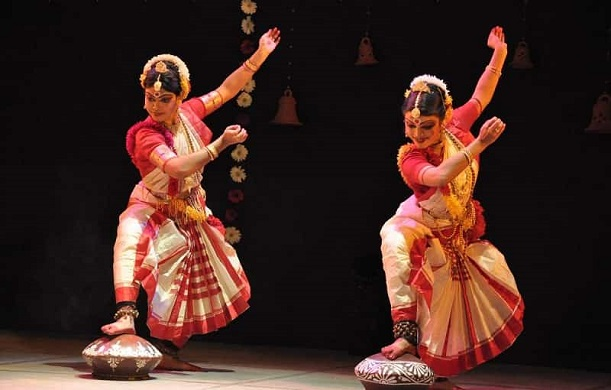
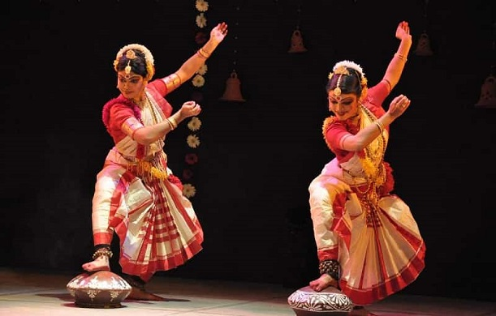

| Home Literature Theatre & Cinema Music & Dance Festivals Cuisine Architecture Handicrafts |
 

A notable music tradition is the Baul music, practised by the Bauls, a sect of mystic minstrels.Other folk music forms include Gombhira and Bhawaiya. Folk music in West Bengal is often accompanied by the ektara, a one-stringed instrument. Shyama Sangeet is a genre of devotional songs, praising the Hindu goddess Kali;kirtan is devotional group songs dedicated to the god Krishna.Like other states in northern India, West Bengal also has a heritage in North Indian classical music. Rabindrasangeet, songs composed and set to words by Rabindranath Tagore, and Nazrul geeti (by Kazi Nazrul Islam) are popular. Also prominent are Dwijendralal, Atulprasad and Rajanikanta's songs, and adhunik or modern music from films and other composers.From the early 1990s, new genres of music have emerged, including what has been called Bengali Jeebonmukhi Gaan (a modern genre based on realism). Bengali dance forms draw from folk traditions, especially those of the tribal groups, as well as the broader Indian dance traditions. Chhau dance of Purulia is a rare form of masked dance.
The music of West Bengal includes multiple indigenous musical genres such as Baul, Ramprasadi, Bishnupuri Classical, Kirtan, Shyama Sangeet, Rabindra Sangeet, Nazrul Geeti, Dwijendrageeti, Prabhat Samgiita, Agamani-Vijaya, Patua Sangeet, Gambhira, Bhatiali, Bhawaiya, Bengali Rock.
Rabindra Sangeet (Robindro shonggit, Bengali pronunciation:), also known as Tagore Songs, are songs from the Indian subcontinent written and composed by the Bengali polymath Rabindranath Tagore, winner of the 1913 Nobel Prize in Literature,the first Indian and also the first Asian to receive such recognition.Tagore was a prolific composer with approximately 2,232 songs to his credit.The songs have distinctive characteristics in the music of Bengal, popular in India and Bangladesh.
It is characterised by its distinctive rendition while singing which includes a significant amount of ornamentation like meend, murki, etc. and is filled with expressions of romanticism. The music is mostly based on Hindustani classical music, Carnatic Classical Music, Western tunes and the inherent Folk music of Bengal and inherently possess within them, a near perfect balance, an endearing economy of poetry and musicality. Lyrics and music both hold almost equal importance in Rabindra Sangeet. Tagore created some six new taals (Which were actually inspired by Carnatic Talas) because he felt the traditional taals existing at the time could not do justice and were coming in the way of the seamless narrative of the lyrics.